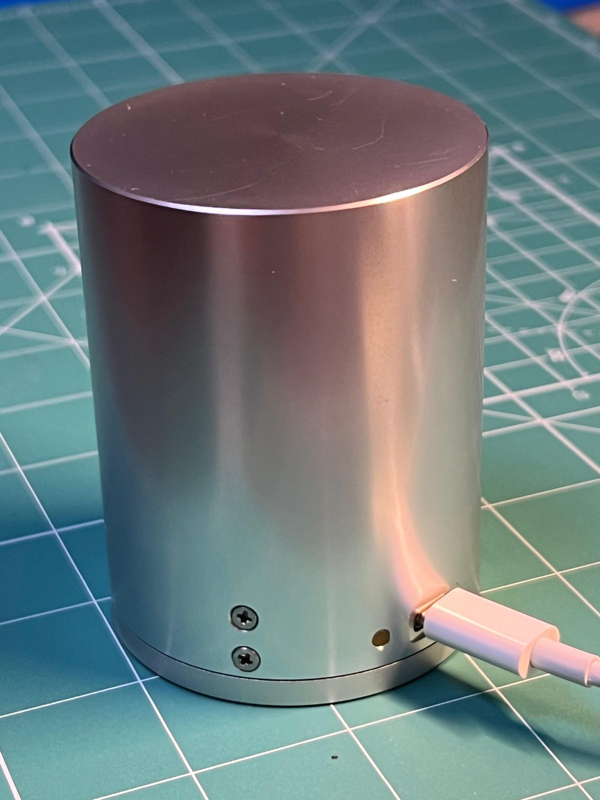
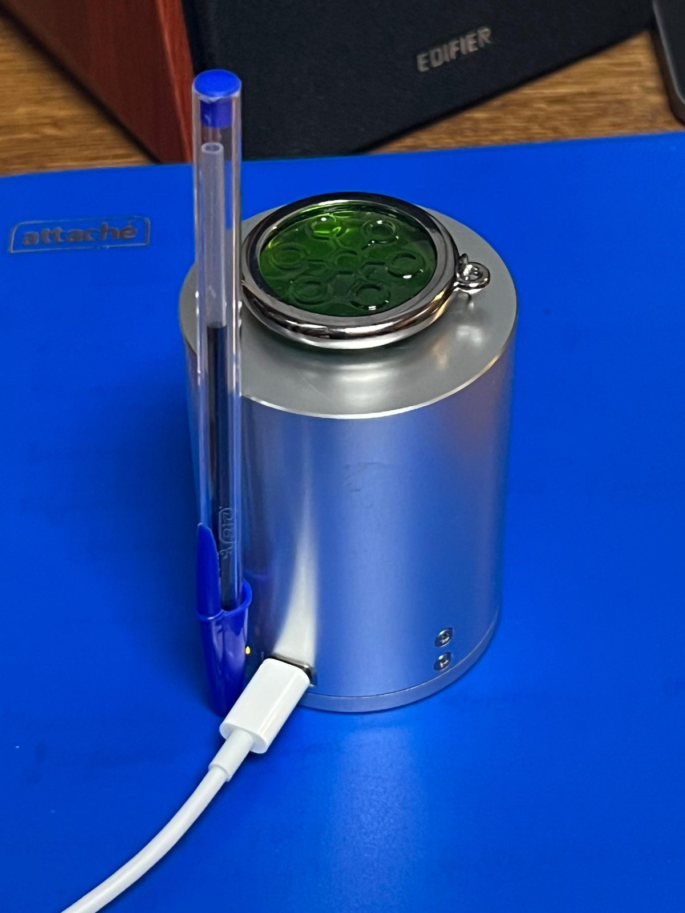
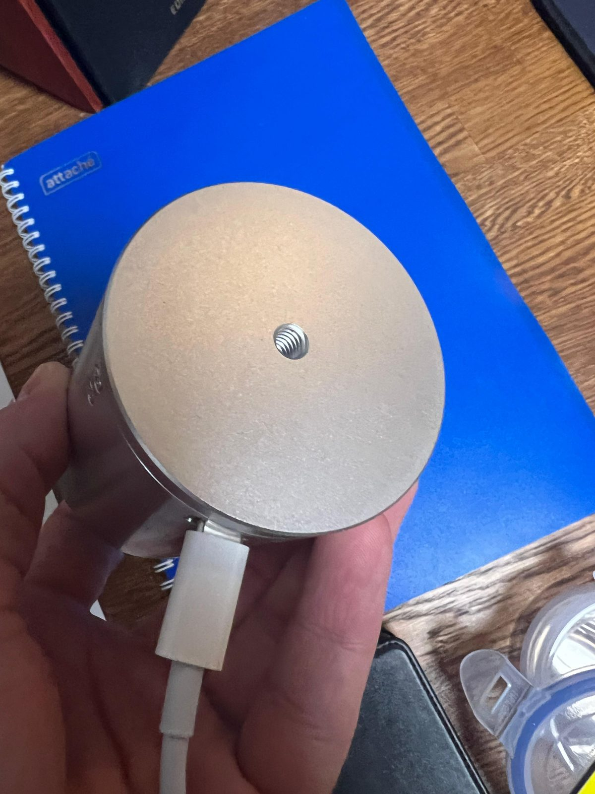
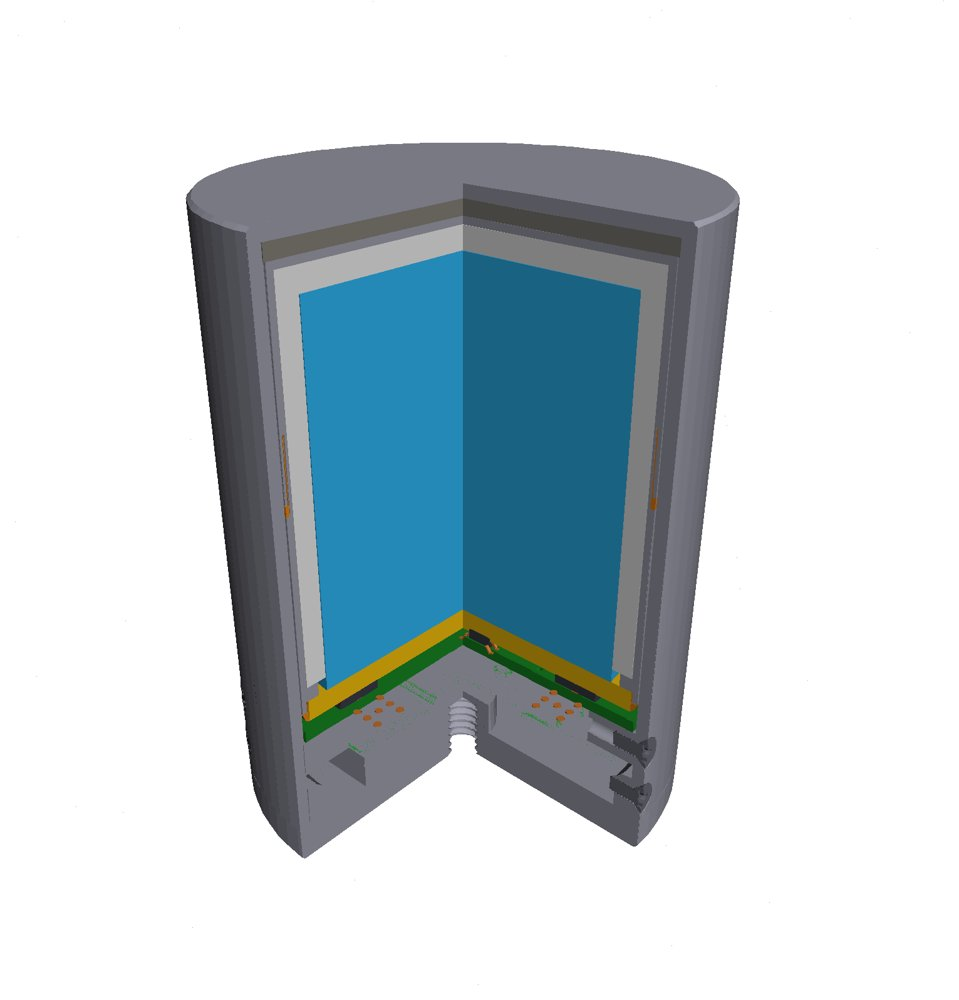
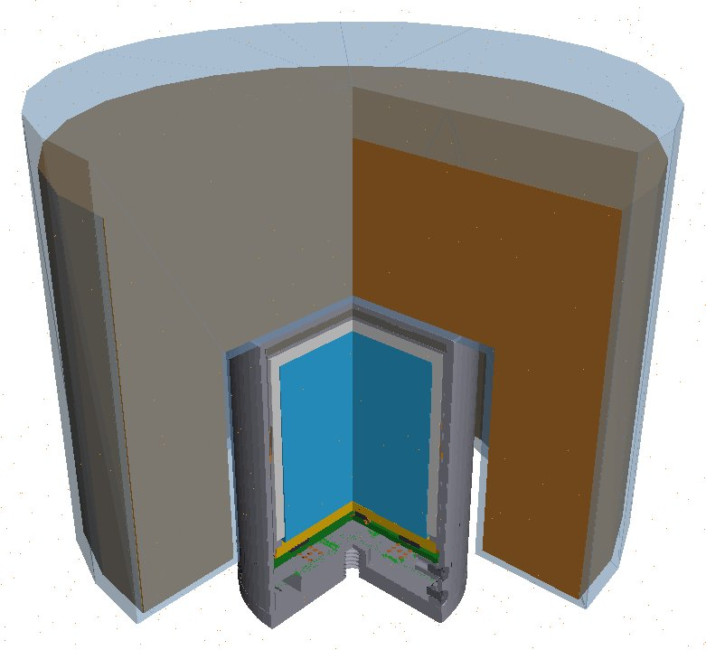
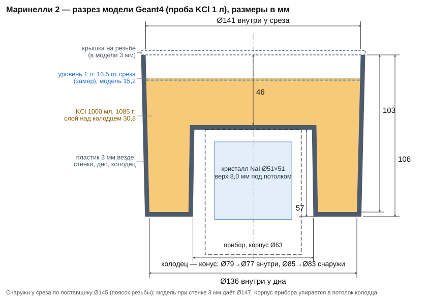

сцинтилляционный гамма-спектрометр · NaI(Tl) Ø51×51 · SiPM · модель Geant4
Atom GS2020 PRO MAX — прибор, модель и спектры
Рабочая страница прибора: описание спектрометра и его Geant4-модели, затем измеренные спектры и их разложение. Сейчас на странице два спектра в маринелли 1 л — калибровочный образец тория-232 и хлорид калия (K-40); цезий-137 и радий-226 — следующие.
Страница подготовлена с использованием ассистента на базе больших языковых моделей (Claude, Anthropic) — роли, ответственность и источники данных в разделах «о странице и её числах» и «источники» внизу страницы.
Спектрометр
Atom GS2020 PRO MAX — сцинтилляционный гамма-спектрометр с кристаллом NaI(Tl) 2×2 дюйма (Ø50,8×50,8 мм). Свет сцинтилляций снимает не ФЭУ, а матрица кремниевых фотоумножителей (SiPM) на торце кристалла; усилитель, АЦП и термостабилизация — в том же алюминиевом корпусе Ø63 мм, связь по USB Type-C. Сборка прибора — Gammaspectacular (Австралия), модель на сайте производителя — GS-MAX-2020-NAI-SIPM.
Кристалл. Изготовитель самого кристалла достоверно не известен. По словам производителя прибора, характеристики кристалла очень близки к пакету Capescint NaI-51×51; в модели принят именно он — по 3D-модели и чертежу изготовителя пакета.



| параметр | по данным производителя прибора | в Geant4-модели этой страницы |
|---|---|---|
| кристалл | NaI(Tl) 2×2″, инкапсулированный | NaI(Tl) Ø50,8×50,8 мм в пакете Capescint: стакан Al 1 мм, отражатель, кварцевое окно Ø57×3 мм — семь тел по профилю изготовителя пакета |
| фотоприёмник | SiPM | матрицы SiPM и платы — по STEP-чертежу прибора; перенос света не моделируется, считается энергия, выделенная в кристалле |
| корпус | алюминий 1,6 мм, Ø63×82 мм | по STEP-чертежу прибора: 41 деталь (корпус, крышка, кольца, платы, крепёж) |
| масса | 550 г | — |
| разрешение | менее 7,5 % (паспорт; вариант с CsI(Tl) — менее 7,0 %) | измерено по таблице пиков прибора: ПШПВ 24,07 кэВ на 238 кэВ, 40,62 на 583, 57,35 на 911, 107,42 на 2614; в свёртке модели — ПШПВ(E) = 0,788·E0,6335 кэВ |
| каналов | до 8192 | — |
| термостабилизация | встроенный датчик, −40…+50 °C | не моделируется |
| программы | BecqMoni Atom, Impulse, Atom-Spectra (Android) | — |
Геометрия модели
Корпус и внутренности прибора перенесены из STEP-чертежа сборки (Blender → тесселированные тела GDML), пакет кристалла — точными телами вращения по профилю изготовителя. Прибор в модели стоит кристаллом вверх. Приёмка геометрии — не только рендер, но и реальный прогон переноса (поле K-40, миллион событий): застреваний навигатора ноль, пик 1461 кэВ на месте. Остаются мелкие наложения деталей чертежа (до 0,4 мм) и непроверенная плотность отражателя пакета — допущение модели.
Модель прибора отдельно (без пробы) и сборка с сосудом Маринелли — файлы GDML в репозитории модели.
Сосудов Маринелли два, оба — «Сосуд Маринелли 1 литр» с крышкой на резьбе (поставщик: габариты Ø145×110 мм, внутреннее отверстие Ø83×55 мм). Маринелли 1 — сосуд источника тория, колодец Ø82 мм. Маринелли 2 — пустой сосуд для воды, KCl и цезия: колодец Ø79 мм, тело конусом, пластик 3 мм; его разрез с размерами — на чертеже справа.



Физическая модель методов 1 и 2
Что входит в модель спектра и откуда берётся — одинаково для тория и K-40. Метод 1 подгоняет Geant4-шаблон полного распада, метод 2 — библиотеку линий, умноженную на Geant4-отклик каждой линии.
| Вклад | Метод 1 | Метод 2 |
|---|---|---|
| γ-линии распада | Geant4-распад иона каждого звена в объёме пробы | линии ENSDF (IAEA Live Chart) × прямой Geant4-отклик монолинии в той же пробе |
| K- и L-рентген распада | внутри шаблона распада | строки библиотеки и узлы сетки откликов |
| Каскадное суммирование | внутри шаблона полного распада; угловая корреляция каскада выключена (#GS-50) | сумм-пики пар γ+γ с общим уровнем; пары рентген+γ не учтены (#GS-49); угловая корреляция не учтена (#GS-50) |
| β-электроны и их тормозное излучение в пробе, сосуде и корпусе | внутри шаблона распада (Geant4, модель Seltzer–Berger) | отдельный β-шаблон: распад иона, фотоны распада убиты при рождении, электроны перенесены; та же амплитуда |
| Внутреннее тормозное излучение (IB) | Geant4 его не рождает. В расчёт не входит нигде (K-40 и цепочка Th-232: для K-40 нет измерения и проверенной формулы, общей проверки по данным тоже нет; описание на примере K-40 — ниже). Оценка по спектру KUB (Knipp–Uhlenbeck, Bloch 1936) остаётся в скриптах (GS_IB=1) как вариант для оценки неопределённости | |
| Перенос в веществе | Geant4 EmStandard_option4, порог продукции 0,05 мм, флуоресценция, Оже, деэкситация ниже порога (PIXE выключен) | |
| Собственные линии детектора | K-рентген иода кристалла и пики вылета иода — рождаются в Geant4 (в методе 2 — в отклике каждой линии) | |
| Разрешение | гаусс, ПШПВ(E) по таблице пиков прибора × 1,05 | |
| Шкала энергии | своя у каждого спектра, калибровка по форме | |
| Фон | замер Маринелли 2 с дистиллированной водой × отношение живых времён, не подгоняется | |
| Подгонка | одна амплитуда в окне 150–3000 кэВ, мера A2, поправка Бирге √(χ²/ν) | |
Тормозное излучение не учтено дважды. Тормозное излучение β-частиц рождается при торможении электрона в веществе и считается Geant4 при переносе электронов; внутреннее тормозное излучение (internal bremsstrahlung, IB) рождается в самом акте распада, и Geant4 его не генерирует. Это два источника одного процесса, в литературе их складывают (обзор Italiano et al., Rep. Prog. Phys. 87, 126301, 2024; для K-40 — Graham, Phys. Med. Biol. 28, 19, 1983). В β-шаблоне метода 2 убиваются только фотоны самого распада (γ и рентген), тормозные фотоны остаются.
Внутреннее тормозное излучение на примере K-40
Что это. При β⁻-распаде 40K → 40Ca электрон рождается в ядре и вылетает из него, а заряд ядра меняется скачком. Такое внезапное изменение иногда сопровождается фотоном: вероятность порядка постоянной тонкой структуры (1/137) на испущенный электрон. Спектр таких фотонов непрерывный, от нуля до граничной энергии β-спектра (у K-40 — 1311 кэВ). Это не линия 1460,8 кэВ: её даёт γ-переход дочернего аргона после электронного захвата (около 10 % распадов), а не тормозное излучение.
Чем отличается от тормозного излучения β-частиц. Электрон, уже вылетевший из ядра, тормозится в веществе пробы, сосуда и корпуса и тоже излучает непрерывный спектр; это считает Geant4 при переносе электронов. Внутреннее тормозное излучение рождается в самом акте распада, от вещества вокруг не зависит, и Geant4 его не разыгрывает (проверено по исходникам распада: в продуктах только электрон, антинейтрино и ион).
Как его считают. Классическая теория Блоха и Кнаппа–Уленбека (1936) выведена для разрешённых переходов и не учитывает кулоновское поле ядра; Льюис и Форд (1957) добавили кулоновскую поправку первого порядка; Гебхардт (1968) дал теорию для любой степени запрета. K-40 распадается β⁻-переходом третьего уникального запрета — одним из самых запрещённых. Единственный известный расчёт IB для K-40 (Graham, 1983) сделан по простой теории Блоха–Кнаппа–Уленбека; измерений IB K-40 в литературе нет (обзор Italiano et al., 2024, §4.7).
Сколько это могло бы дать. По нашей таблице KUB для K-40 — порядка 9·10−3 фотона на распад выше 5 кэВ; в окне подгонки это около 2 % модели, а сама активность при включении IB получалась бы примерно на 1 % ниже. Для запрещённых переходов измеренный IB обычно выше расчёта по KUB, особенно на высоких энергиях, поэтому эта оценка может быть занижена.
Почему в расчёт K-40 не входит. Величина и форма IB для этого перехода не подтверждены ни измерением, ни проверенной формулой, а сам измеренный спектр KCl IB не требует (подгонка не становится лучше при его включении). Поэтому IB не входит в модель до числового подтверждения; вернуть его можно, когда выполнены условия: формула для третьего уникального запрета, проверка на нуклиде того же класса, сравнение расчёта с IB и без него на измеренном спектре, баланс энергии и нормировка на распад, отдельное решение по электронному захвату.
Не учтено или упрощено. Мягкая зона ниже 150 кэВ в подгонку пока не входит (#GS-44): KCl экранирует внешний фон сильнее воды, не описаны нелинейность света NaI и порог прибора. Спектр IB по KUB выведен для разрешённых переходов; для K-40 (третий уникальный запрет) формула теории Gebhardt (1968) не прочитана, поправка формы и матричный элемент запрета не учтены — величина и форма IB известны только как оценка, её неопределённость не сводится к одному числу. Внутреннее тормозное излучение при электронном захвате K-40 (около 11 % распадов) не добавлено; грубая оценка без кулоновских поправок даёт пренебрежимо малый выход, но она неустойчива (для других ядер эксперимент выше такой теории в разы). Энергия, унесённая фотоном IB, не вычтена из β-электрона — по расчёту, около 0,01–0,03 % модели. Тормозное излучение β-частиц в веществе Geant4 воспроизводит с точностью порядка 10–50 % (Pandola et al., 2015), то есть его вклад в активность известен лишь до долей процента — того же порядка, что весь вклад внутреннего тормозного. Совпадение методов 1 и 2 на KCl — проверка сборки, а не физики: оба используют один Geant4, одну геометрию и одну ожидаемую активность.
Спектры
Каждый источник — отдельный спектр в сосуде Маринелли 1 л со своей шкалой энергии и своей Geant4-моделью сосуда и пробы (объём, плотность, состав). Торий измерен в сосуде Маринелли 1 (колодец Ø82 мм), вода и KCl — в Маринелли 2 (колодец Ø79 мм). Выбор источника:
спектр 1 · Th-232 · маринелли 1 л
Разложение спектра тория-232
Образец с известной активностью Th-232 в маринелли 1 л; удельная активность 910 Бк/кг (6,0 %), масса 1052 г — полная активность 957 Бк ± 57 Бк. Те же два независимых метода, что на странице Гамма-1С: метод 1 — подгонка полного спектра МК-шаблонами полного распада звеньев ветви; метод 2 — моноэнергетическая сетка Geant4 × библиотека выходов γ-линий (62 линий донорской библиотеки — метод 2, либо все известные линии ENSDF из API IAEA Live Chart, 342 линий без порога по интенсивности — метод 2-2; переключением) плюс 57 сумм-пиков каскадного совпадения. Разрешение прибора — степенной закон ПШПВ(E) = 0,788·E0,6335 кэВ по 6 линиям таблицы пиков самого прибора.
Мягкая зона (ниже 150 кэВ). Модель в мягкой зоне выше измерения. Причина остатка не установлена: у пробы KCl та же картина (вкладка «K-40 (KCl)»); проверка шкалы энергии ниже 238 кэВ — в работе. Окно подгонки начинается со 150 кэВ, поэтому на активность это почти не влияет.
Геометрия и фон. Жидкость с источником заполняет сосуд на 1 см ниже края (сосуд на 1 л не доходит до края). Метод 1 при фоне с водой даёт активность, близкую к известной (точное отношение — на вкладке «метод 1» ниже). Вычитается фон, измеренный в сосуде Маринелли 2 с дистиллированной водой (колодец Ø79 мм против Ø82 мм у Маринелли 1 с торием) (живое время короче, чем у фона лаборатории; шкала энергии — своя, по пяти реперам этого фона). Фон лаборатории без сосуда (около половины измеренного спектра) показан только на вкладке «сравнение»: он даёт заметно худшее согласие и не используется как основной. Эффективность модели проверена отдельно замером KCl — K-40 с активностью, известной по массе (вкладка «K-40 (KCl)»).
Подгонка полного спектра одним шаблоном ветви в вековом равновесии: сумма МК-шаблонов полного распада восьми звеньев (каждое звено — отдельный Geant4-прогон своего нуклида, Tl-208 с весом ветвления Bi-212) и измеренный фон, приведённый по живому времени и не подгоняемый. Амплитуда одна на всю ветвь. Заливкой — вклад каждого звена в модель при найденной активности.
Контур слоя сплошной там, где МК-шаблон звена набран не менее чем 4 отсчётами на канал, и пунктирный там, где меньше: ниже порога доля звена в канале определяется шумом шаблона и как измеренная доля не годится. Какая часть вклада слоя лежит ниже порога, показывает подсказка при наведении на нуклид в легенде.
Выход каждой γ-линии библиотеки свёрнут с полным откликом детектора на монохроматический квант этой энергии — пик, комптоновский континуум, вылеты, — снятым прямым Geant4-прогоном объёмного источника в том же сосуде на энергии самой линии. Сумма откликов с весами выходов подгоняется одной амплитудой ветви ко всему спектру, как метод 1. Отдельно учтены 57 сумм-пиков каскадного совпадения. Рентгеновское и характеристическое излучение (K/L-линии всех звеньев ветви) учтено в обеих библиотеках как отдельные строки (#XR-1); окно подгонки начинается выше их области (150 кэВ), поэтому на итоговую активность они не влияют. Переключатель библиотеки: 62 линий донорской библиотеки (Iγ ≥ 2 %) или 342 линий ENSDF, выгруженных через API IAEA Live Chart of Nuclides, — все известные γ-линии звеньев в окне подгонки без порога по интенсивности (метод 2-2), на каждую линию — свой узел сетки Geant4.
В модель метода 2 входит тормозное излучение β-частиц каждого β-звена — отдельный слой на графике; внутреннее тормозное излучение (IB) в расчёт не входит до числового подтверждения. В ней нет суммирования каскадов, кроме перечисленных сумм-пиков, а в основной библиотеке — и линий слабее порога, поэтому на единицу активности она ниже модели метода 1 и подгонка завышает активность.
Собственные линии детектора. После фотопоглощения в кристалле K-рентген иода (28,5 и 32,3 кэВ) иногда выходит наружу, и событие регистрируется ниже фотопика на эту энергию — пик вылета. В библиотеку линий такие пики не вносятся: они рождаются в отклике Geant4 каждой линии. Доли ниже посчитаны по откликам сетки (энерговыделение до размытия, подложка вычтена по боковым окнам).
Спектры образца и фона. Фон приведён по живому времени к образцу и показан как снят — без ослабления сосудом; разность — счёт образца минус приведённый фон в каждом канале. Шкала энергии — полином файла прибора с кусочно-линейной поправкой по центроидам его таблицы пиков. Реперы — γ-линии ветви Th-232.
Калибровка по разрешению
Ширины линий взяты из таблицы пиков самого прибора (первичный источник центроидов и ширин для этого спектра), линия K-40 фона в закон не входит. По ним построен степенной закон ПШПВ(E) = k·Ep; им уширяются шаблоны обоих методов. На 662 кэВ закон даёт 48,2 кэВ; СКО описания точек 2,5 %.
Оценки на одной шкале. Ширина цветной полоски — заявленная неопределённость; относительный разбег — под шкалой. Переключатель «фон» на панели пересчитывает все оценки.
При уровне заполнения источника на 1 см ниже края сосуда метод 1 при фоне с водой ближе всего к известной активности и даёт лучшее согласие формы пиков; при фоне лаборатории без сосуда — заметно хуже, он показан только для сравнения. Метод 2 систематически выше известной активности вне зависимости от библиотеки линий. В модели метода 2 есть тормозное излучение β-частиц, внутреннее тормозное (IB) в расчёт не входит; нет суммирования каскадов, кроме перечисленных сумм-пиков, а в основной библиотеке — и линий слабее порога, поэтому на единицу активности она ниже модели метода 1, и подгонка это компенсирует. Эффективность самой модели проверена отдельно по K-40 (вкладка «K-40 (KCl)» выше).
спектр 2 · K-40 · KCl в маринелли 1 л
Проверка эффективности модели по K-40
Хлорид калия категории «ч»: масса 1 085 г, объём в сосуде 1 000 мл (насыпная плотность 1,08 г/см³), тот же прибор, сосуд — Маринелли 2. Активность K-40 известна по массе, без паспорта: масса × доля калия в KCl (0,52445) × удельная активность природного калия (31,52 Бк/г K) = 17 938 Бк. Живое время замера 41,5 ч; вычитается тот же фон Маринелли+вода, что у тория. Шаблон — Geant4-прогон полного распада K-40 в пробе с высотой заполнения под этот объём и плотностью KCl. Шкала энергии — своя, калибровка по форме: откликами Geant4 на ожидаемые пики этого спектра (в файле прибора калибровки нет).
Метод 1 (подгонка полного спектра, ядро размытия то же, что у тория) дал 18 069 ± 41 Бк — 1,0073 от ожидаемой; χ²/ν = 0,952, форма пика 1460,8 кэВ — χ²/ν = 0,12; с донорским хвостом ядра — 1,0157. Метод 2 (линия 1460,8 кэВ с выходом 10,34 % по LNHB-DDEP 2025 × прямой Geant4-отклик монолинии в этой пробе, плюс тормозное излучение β-частиц с той же амплитудой; внутреннее тормозное в расчёт не входит) дал 17 870 ± 25 Бк — 0,9962 от ожидаемой, χ²/ν = 1,88. Оба метода сошлись между собой; общее для них отклонение от ожидаемой активности относится к модели (прибор, сосуд, проба), его причина не установлена. Выход γ K-40 принят по LNHB-DDEP 2025 (10,34 %); в ENSDF и в данных распада Geant4 он равен 10,66 %, и с ним оба метода дали бы примерно на три процента меньше. Шаблон распада метода 1 несёт выход 10,66 % внутри, поэтому активность метода 1 пересчитана множителем 10,66/10,34; в методе 2 выход LNHB стоит в самой библиотеке. Влажность пробы неизвестна: ожидаемая активность приведена для сухого KCl, влага её снижает.
Мягкая зона. Ниже 150 кэВ разность «измерение − фон воды» у KCl на 40–90 кэВ отрицательна — как и у тория. Причина не установлена. Реперов шкалы энергии ниже 238 кэВ у этих спектров пока нет; проверка шкалы в мягкой зоне — подгонкой формы мультиплета K-рентгена висмута в фоне (дочерние продукты радона и торона) — в работе. Окно подгонки начинается со 150 кэВ.
Подгонка полного спектра одним МК-шаблоном полного распада K-40 — Geant4-прогоном ионного источника K-40 в объёме пробы KCl (распадов: 55 000 000 (K-40)) — и измеренным фоном Маринелли+вода, приведённым по живому времени и не подгоняемым. Амплитуда одна — активность K-40; окно подгонки 150–3000 кэВ. Заливкой — вклад шаблона в модель при найденной активности.
Контур слоя сплошной там, где МК-шаблон набран не менее чем 4 отсчётами на канал, и пунктирный там, где меньше: ниже порога доля слоя в канале определяется шумом шаблона и как измеренная доля не годится. Какая часть вклада слоя лежит ниже порога, показывает подсказка при наведении на слой в легенде.
Выход γ-линии K-40 1460,8 кэВ (10,34 % на распад, LNHB-DDEP 2025) свёрнут с полным откликом детектора на монохроматический квант этой энергии — пик, комптоновский континуум, вылеты, — снятым прямым Geant4-прогоном объёмного источника в той же пробе KCl (узлов сетки: 5). Отклик с весом выхода подгоняется одной амплитудой ко всему спектру, как в методе 1. У K-40 одна γ-линия и нет каскада: библиотека — одна строка, сумм-пиков нет, отдельного варианта «все известные линии» (метод 2-2 у тория) нет.
В модели метода 2 три части с одной амплитудой: отклик на γ-квант 1460,8 кэВ, тормозное излучение β-частиц K-40 (основной канал его распада) и K-рентген аргона; внутреннее тормозное излучение (IB) в расчёт не входит до числового подтверждения. K-рентген аргона после захвата электрона (около 3 кэВ) из пробы до кристалла не доходит: прямые прогоны Geant4 дали ноль событий.
Собственные линии детектора. После фотопоглощения в кристалле K-рентген иода (28,5 и 32,3 кэВ) иногда выходит наружу, и событие регистрируется ниже фотопика на эту энергию — пик вылета. В библиотеку линий такие пики не вносятся: они рождаются в отклике Geant4 линии. Доли ниже посчитаны по отклику сетки (энерговыделение до размытия, подложка вычтена по боковым окнам).
Спектры пробы KCl и фона Маринелли+вода. Фон приведён по живому времени к пробе; разность — счёт пробы минус приведённый фон в каждом канале. Шкала энергии у каждого спектра своя: в файле прибора для KCl калибровки нет, поправка шкалы — кусочно-линейная по узлам групп пиков этого спектра, подогнанных по форме откликами Geant4. В таблице — полином, представляющий шкалу (отклонение от неё до 8,5 кэВ). Реперы — линия K-40 и линии фона.
Калибровка по разрешению
Своей таблицы пиков у спектра KCl нет. Ширины линий — таблица «Параметры пиков» СпектраЛайн по спектру тория-232 того же прибора, умноженная на 1,05: ровно эти точки лежат в свёртке шаблонов обоих методов (между точками — интерполяция в логарифмах). Строка K-40 в свёртку не входит и служит контролем: СпектраЛайн даёт на 1460,8 кэВ 70,96 кэВ, свёртка модели — 80,05 кэВ. Степенной закон ПШПВ(E) = 0,788·E0,6335 кэВ описывает точки свёртки со СКО 2,5 %; на 662 кэВ он даёт 48,2 кэВ.
Оценки на одной шкале: ожидаемая по массе, метод 1, метод 2. Ширина цветной полоски — заявленная неопределённость (у методов — статистическая, умноженная на поправку Бирге, когда χ²/ν больше единицы); относительный разбег — под шкалой.
Ожидаемая активность посчитана по массе, без аттестации: масса × доля калия в KCl × распространённость K-40 × ln2/T½. Её неопределённость 0,37 % складывают распространённость K-40, период полураспада и допуск чистоты реактива; погрешность весов не известна и не включена. Внутреннее тормозное излучение β-распада Geant4 не генерирует; в расчёт K-40 оно не входит (оценка по спектру KUB снижала бы активность примерно на 1 % и не подтверждена измерением). Выход γ-линии K-40 принят по LNHB-DDEP 2025 (10,34 %); в ENSDF он равен 10,66 %.
KCl: спектр 2026-10-05 — 2026-10-07, живое время 149332 с, реальное 149433 с; фон Маринелли+вода — живое время 119423 с.